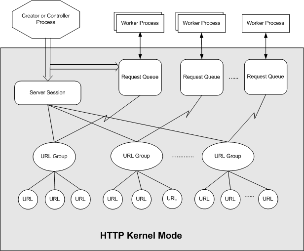

The server session, request queue, and URL group configuration objects enable applications to configure the HTTP service. The properties set on these objects override the HTTP Server API wide default configurations.
The diagram below shows the relationship between the configuration objects and the application. Typically, a single server session is created for each application with one or more URL groups created under it. The request queues are created independent of the URL group or server session. URL groups must be associated with a request queue to receive requests.

The named request queue feature of the HTTP Server version 2.0 API allows multiple worker processes to receive requests on a request queue. The request queue is created by a controller process that identifies the worker processes granted access to the request queue. For more information, see the Named Request Queue topic
For more information about setting properties on the configuration objects, see the following topics:
The following table lists properties that are set on the configuration objects. For more information about property configurations, see the Configuring Properties in HTTP Version 2.0 topic.
| Name | Property |
|---|---|
| Server Session | HttpServerStateProperty HttpServerLoggingProperty HttpServerBandwidthProperty HttpServerTimeoutsProperty HttpServerAuthenticatonProperty |
| URL Group | HttpServerStateProperty HttpServerAuthenticatonProperty HttpServerLoggingProperty HttpServerConnectionsProperty HttpServerBandwidthProperty HttpServerBindingProperty HttpServerTimeoutsProperty |
| Request Queue | HttpServerStateProperty HttpServerQueueLengthProperty HttpServer503VerbosityProperty |